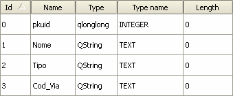
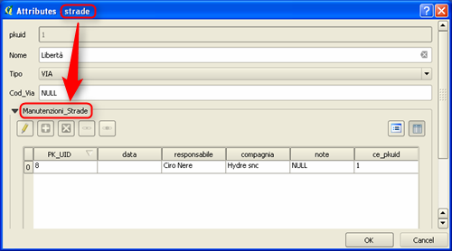
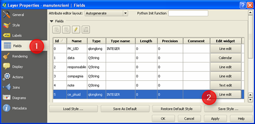
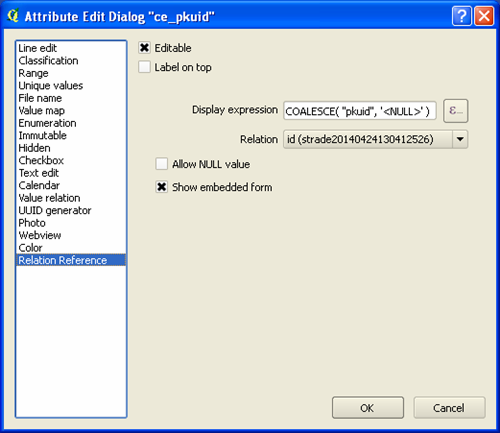
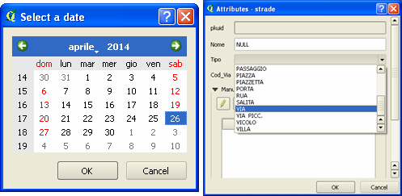

Le relazioni in QGIS consentono di sviluppare dei casi d’uso applicativi molto interessanti; una delle ragioni del post è quella di contribuire alla diffusione della conoscenza del tema.
Il caso d’uso: le strade e la loro manutenzione
Immaginate di essere i gestori del network della rete stradale della vostra città e di volere utilizzare QGIS (insieme ad altri strumenti) per farlo. Avete quindi un layer cartografico con tutte le strade (e i relativi attributi) e la necessità di associare a questo il dataset delle manutenzioni che vengono realizzate nei vari componenti della rete.
A seguire vedremo come gestire la cosa con QGIS, le relazioni e con il comodo supporto delle maschere di input personalizzabili.
Chiavi e relazione
Per mettere in relazione il dataset delle manutenzioni con quello delle strade, potrete usare il meccanismo classico delle chiavi.
Il layer delle strade sarà caratterizzato da un campo con un codice identificativo numerico univoco per ogni strada – la chiave primaria - denominato nell’esempio di questo post “pkuid”.
Il database delle manutenzioni – che è una semplice tabella senza alcun attributo spaziale – è composto dai campi “PK_UID”, “data”, “responsabile”, “compagnia”, “note”; aggiungeremo un campo che contenga il codice identificativo della strada a cui la manutezione è riferita. Questo campo farà da chiave esterna e si chiamerà “ce_pkuid”.
Il nostro modello prevede, per semplicità, che ad ogni strada sia possibile associare una o più manutenzioni; una classica relazione 1:N impostata sulle due chiavi numeriche di cui sopra.
Layer
Il layer delle strade ha la struttura sottostante, in cui sono stati introdotti dei campi per raccogliere il nome della Via, il relativo tipo (Corso, Viale, Via, ecc.) e il codice identificativo comunale.

Quello delle manutenzioni conterrà un codice identificativo numerico univoco per ogni elemento, un campo in cui inserire la data dell’intervento di manutenzione, il nome del responsabile, il nome della compagnia incaricata e un campo per le note.

Definire la relazione
La relazione tra i due dataset si definisce a livello di “Proprietà di progetto”. Aperto il tab Relations si farà click su “Add Relation” e si imposteranno i seguenti parametri:
- Name, per dare un nome alla relazione;
- Referencing Layer (Child), per il nome del layer che contiene la chiave esterna;
- Referencing Field, per il nome della chiave esterna;
- Referencing Layer (Parent), per il nome del layer che contiene la chiave primaria;
- Referencing Field, per il nome della chiave primaria;
- Id, che viene usato internamente da QGIS, deve essere univoco e fa da indice della tabella di relazione tra chiave primaria e chiave esterna.

A relazione definita, questa apparirà nella finestra di dialogo:

Moduli
Una volta definita la relazione, se ne avrà evidenza anche nel modulo di inserimento/modifica degli attributi del dataset delle strade. La visualizzazione a moduli in QGIS è molto utile per alcuni task di verifica ed inserimento dei dati, ed è molto personalizzabile.

La tabella della manutenzioni sarà visibile in un widget del modulo dello strade, e sopra questa saranno visibili cinque pulsanti:
- la matita, per attivare la modifica della tabella delle manutenzioni;
- il “+” per aggiungere un nuovo record alla tabella, che di default verrà associato all’elemento attivo del layer “strade”;
- il tasto “x” per cancellare il record selezionato della tabella “manutenzioni”;
- il tasto “catenella” che aprirà una nuova finestra di dialogo con il quale associare qualsiasi manutenzione presente alla strada corrente;
- il tasto “rompi catenella” che rimuoverà l’associazione tra la manutenzione selezionata e la strada corrente;
- ed infine, a destra, ci sono due pulsanti per passare dalla vista “tabella” a quella modulo.
Anche per il dataset delle manutenzioni è possibile attivare il modulo di inserimento/modifica degli attributi, in modo che dia conto visivamente della relazione con il layer delle strade.
A partire dalle proprietà del layer manutenzioni, bisognerà modificare il widget del campo che fa da chiave esterna.

E scegliere come tipo di widget “Relation Reference”, utilizzando i parametri visibili nella figura sottostante:

Una volta scelto questo speciale widget, sarà possibile leggere la relazione tra i due layer anche nel modulo delle manutezioni:

Note finali (riferimenti, file esempio e video demo)
Questo articolo è quasi una traduzione di questo di Matthias Kuhn. Sono caduto nel suo bel blog, perché tra i tipi di widget accessibili nelle proprietà dei campi di un layer ho scoperto il tipo “Relation Reference”. A me era completamente ignoto; ho provato a cercare nella documentazione, senza però trovarne traccia. Il post di Matthias mi è sembrata una piccola perla e ho creduto utile clonarlo.
Da qui potrete scaricare un file di progetto d’esempio basato su QGIS 2.2 e come formato dati su SpatiaLite. Questo ultimo farà da contenitore unico sia del file spaziale (le strade), che della tabella delle manutenzioni.
Nel progetto, per i due moduli, ho impostato altri widget diversi da quello di default (“Line edit”); alcuni sono di grande comodità come quello per il campo “data” delle manutenzioni (widget di tipo “Calendar”), o l’elenco controllato del campo “Tipo” (widget di tipo “Value map”) del layer delle strade.

Per chi vuole vedere la cosa in azione ho preparato un piccolo video, che non ha alcuna pretesa didattica. Vuole essere soltanto una carrelata visuale rapida di alcune delle cose descritte in questo post.

Un’ultima annotazione finale: il caso d’uso descritto è molto semplificato e non tiene conto di tutte i requisiti di un’applicazione complessa come la gestione di un network stradale. Mi è stato utile come esempio per scrivere di QGIS, relazioni, moduli e widget.
NdR: Salvatore Fiandaca, prendendo spunto da questo post, ne ha creato una sorta di versione aggiornata che trovate qui. Ringraziamo Totò e consigliamo la lettura 
I contenuti potrebbero non essere più adeguati ai tempi!

By Maurizio Foderà on apr 29, 2014
Grazie Andrea!!!
Avevo letto anche io il post di Kuhn a suo tempo quando mi sono imbattuto nelle Relation Reference.
Però tu come la solito riesci sempre a “guarnire la torta” in un modo che mi piace TANTO
By Andrea Borruso on apr 29, 2014
Maurizio grazie mille a te per avere voglia di lasciare un segno qui.
E’ importante
By Marco on lug 18, 2014
Veramente un pratico “tutor” su relazioni, moduli e widget.
Complimenti
Marco
By Andrea Borruso on lug 18, 2014
Grazie mille Marco.
By Matteo Asioli on lug 21, 2014
Grazie del Tutorial veramente molto chiaro! Una funzione di QGIS che non consocevo. Grazie!
By Andrea Borruso on lug 21, 2014
E grazie mille anche a te Matteo
By Peppe on ott 15, 2014
Ciao Andrea,
mi sono imbattuto su questo articolo mentre lavoravo su dati catastali, e devo dire che i risultati sono sorprendenti.
Ti volevo fare una domanda: ma è possibile stampare un report con l’elenco delle strade e le relative manutenzioni?
Grazie e complimenti per l’articolo
By Andrea Borruso on ott 15, 2014
Ciao Peppe,
penso di sì, però ti chiederei di inviarmi (anche uno stralcio) del tuo progetto.
Se si riesce, poi condividiamo procedura.
E grazie per i complimenti
By Peppe on ott 15, 2014
Praticamente la procedura è un pò complessa ma provo a descriverla brevemente (catasto terreni):
Lo scopo è quello di avere la possibilità di capire chi sono i proprietari delle singole particelle (relazione 1:n)
I dati che ho utilizzato sono di 2 tipi, vettoriali (che chiameremo “PARTICELLE”) ed alfanumerici.
Questi ultimi a sua volta sono divise in tre file con estensioni “.SOG” “.TIT” “.TER” che rispettivamente contengono:
-l’elenco dei soggetti con i rispettivi “ID_SOGGETTO” (ed altre informazioni relative ai soggetti)
-i dati relativi alle titolarità degli immobili con “ID_SOGGETTO” e il relativo “ID_IMMOBILE” di appartenenza;
-le caratteristiche degli immobili e quindi per ogni “ID_IMMOBILE” è indicato il numero di foglio, particella, e tutti gli atri dati catastali.
Dopo aver sistemato i singoli files (che sono associati ad un file che descrive le specifiche dei dati http://wwwt.agenziaentrate.gov.it/mt/ServiziComuniIstituzioni/ES-23-IS-05_100909.pdf) tramite una macro in excel che mi imposta i file in modo tabellare e me li salva in “.csv”, li importo in QGis.
A questo punto su QGis mi ritrovo i seguenti layers con i principali campi:
-PARTICELLE (“FOGLIO”, “PARTICELLA”)
-SOG (“ID_SOGGETTI”, “NOME”, “COGNOME”, “COD_FISC”)
-TIT (“ID_SOGGETTO”, “ID_IMMOBILE”)
-TER (“ID_IMMOBILE”, “FOGLIO”, “PARTICELLA”)
La prima cosa da fare quella di crearmi un unica tabella che abbia i dati dei soggetti e degli immobili (“ID_IMMOBILE”, “ID_SOGGETTI”, “NOME”, “COGNOME”, “COD_FISC”).
Per fare ciò ho creato un join nella tabella TIT con la tabella SOG inserendo come chiave di collegamento “ID_SOGGETTO” (ho chiamato questa nuova tabella TIT_SOG).
L’altra operazione da fare è quella di collegare il file vettoriale PARTICELLE con la tabella TER per avere “ID_IMMOBILE” e quindi poter creare la relazione con TIT_SOG. Per cui ho creato un join tra PARTICELLE e TER (nome del nuovo shape: PARTICELLE_TER).
Ora finalmente ho potuto creare la relazione come descritto nell’articolo con i seguenti parametri:
NOME: CENSUARIO
LAYER PADRE: TIT_SOG
CAMPO DI RIFERIMENTO: “ID_IMMOBILE”
LAYER FIGLIO: PARTICELLE_TER
CAMPO DI RIFERIMENTO: “ID_IMMOBILE”
A questo punto tutti i dati sono ben collegati ma trovo difficoltà a creare un elenco delle delle particelle con i rispettivi proprietari.
Spero di essere stato esaustivo e che qualcuno mi possa suggerire come creare questo report.
By lorenzo on ott 16, 2014
Ciao Peppe,
provo a risponderti io.
Se ho ben capito la relazione 1:n in Qgis funziona il tuo problema è visualizzare una tabella/elenco che associ agli estremi catastali di una particella (1) i rispettivi proprietari (n).
Temo (felice se sarò smentito) che tu possa visualizzare per ogni singola particella selezionata gli n proprietari attraverso la funzionalità della maschera ma che la visualizzazione/esportazione dell’elenco non sia possibile.
Temo che per gestire in maniera opportuna questa relazione tu debba avventurarti nell’uso di un database, sei pronto?
PS rileggendo il tuo commento ho visto che parli di join, mi viene il dubbio che tu abbia utilizzato la modalità JOIN delle proprietà del layer in luogo di quella relazioni (Qgis 2.4 ITA) selezionabile dalle proprietà del progetto.
Facci sapere.
Ciao.
Lorenzo
By Peppe on ott 17, 2014
Ciao Lorenzo,
ho notato che utilizzando lo shape PARTICELLE non si può avere un report che colleghi le singole particelle ed i rispettivi proprietari, ma ho trovato l’alternativa utilizzando la tabella TIT_SOG, mi spiego:
questa tabella, come spiegato in precedenza, ha le informazioni di tutte le possibili titolarità dei soggetti con i relativi immobili, manca solo l’identificazione del foglio e particella che aggiungo utilizzando il “Join” con lo shape PARTICELLE in funzione del campo “ID_IMMOBILE”. Così facendo posso effettuare una query alfanumerica in modo da poter estrapolare gli immobili di mio interesse ed i relativi proprietari
Non so se ho ben capito il tuo PS ma ti dico che utilizzo QGis 2.4 ed utilizzo il join selezionandolo dalle proprietà del layer ineressato
PS. certo che ora sarebbe interessante trovare un plugin che ti permette di effettuare la query ed inserire quindi foglio e particella e ti torna il risultato che altrimenti dovresti fare con l’espressione.
By Lorenzo Perone on ott 20, 2014
Ciao Peppe,
mi fa piacere che tu sia riuscito a fare correttamente il collegamento.
Quando parlavo di JOIN mi riferivo al fatto che, se non erro, il collegamento tra particelle (geometrie) e la tabella TIT_SOG è di tipo 1:1 quindi il collegamento tramite JOIN è efficace. Nel collegamento tra la tabella TIT_SOG e la tabella con l’anagrafica dei soggetto (anche qui se ricordo bene) è di tipo 1:n quindi operare un JOIN non è efficace (collegheresti la particella solo al primo proprietario). Devi quindi creare una relazione 1:n che in Qgis 2.4 si ottiene dal menù Progetto => Proprietà del progetto => Relazioni
Buon lavoro.
lorenzo
By Peppe on ott 21, 2014
Ciao Lorenzo,
mi fa piacere che fai delle osservazioni perchè servono ad evitare delle sviste che portano a degli errori che, dipende dal contesto, possono rivelarsi piuttosto gravi.
La tabella TIT (contiene 100.000 elementi) è così formata:
ID_SOGGETTO|ID_IMMOBILE|QUOTA_PROPRIETA’
00001 |1000 |1/2
00001 |2000 |1/3
00002 |1000 |1/2
00003 |2000 |1/3
00004 |2000 |1/3
La tabella SOG (contiene 20.000 elementi) è così formata:
ID_SOGGETTO|CF |……|……
00001 |AAAAAAAAAA |……|……
00002 |BBBBBBBBBB |……|……
00003 |CCCCCCCCCC |……|……
00004 |DDDDDDDDDD |……|……
—————
La tabella TIT_SOG tramite il join ID_SOGGETTO sarà così formata:
(TIT)ID_SOG|(TIT)ID_IMM|(TIT)Q.PROP|(SOG)ID_SOG|(SOG)CF
00001 |1000 |1/2 |00001 |AAAAAAAAAA
00001 |2000 |1/3 |00001 |AAAAAAAAAA
00002 |1000 |1/2 |00002 |BBBBBBBBBB
00003 |2000 |1/3 |00003 |CCCCCCCCCC
00004 |2000 |1/3 |00004 |DDDDDDDDDD
con il join (fatto sulla tabella TIT) si uniscono i dati dei soggetti ogni qualvolta viene visualizzato nella tabella TIT (che praticamente è la tabella che contiene più dati in quanto ci sono le varie combinazioni tra soggetti ed immobili, 100.000 elementi).
Saluti
Peppe
By LaValeGeo on gen 15, 2015
Buongiorno, ho trovato questo articolo molto interessante. Vorrei però aver conferma del fatto che in Qgis le relazioni 1:N sono possibili solamente se i file si trovano all’interno di un geodatabase. Ho infatti provato a fare una relazione 1:N tra uno shapefile e una tabella dbf ma senza riuscirci (a differenza di ArcGis dove è invece possibile).
Grazie
By pIETRO on feb 7, 2015
Ciao, ho provato anche io ma senza risultati. dobbiamo necessariamente trasferire i dati in un geodatabase?
By Andrea Borruso on feb 11, 2015
Ciao LaValeGeo e pIETRO, non ho provato con uno shapefile ma dovrebbe essere la stessa cosa.
Fra l’altro nel mio post di riferimento – http://blog.vitu.ch/10112013-1201/qgis-relations – si fa riferimento ad uno shapefile ed un file CSV.
Appena posso provo
By Totò on gen 2, 2016
Ciao,
articolo molto interessante che ritorno a leggere molto volentieri anche perchè, da qualche tempo a questa parte, mi piace scrivere articoli su QGIS.
A mio avviso è di fondamentale importanza usare quantomeno spatiaLite per questi casi d’uso, sconsiglio vivamente di usare semplici shapefile e file csv (quest’ultimo non editabile in QGIS soprattutto se messo in relazione con altre tabelle), inoltre con lo shapefile non si ha la possibilità di definire la chiave primaria serial (cioè autoincrementale). Quindi rispondendo a pIETRO: è possibile utilizzare semplici shapefile e con tabella manutenzione .dbf e non csv; ma la cosa diventerebbe parecchio noiosa.
ciao Andrea